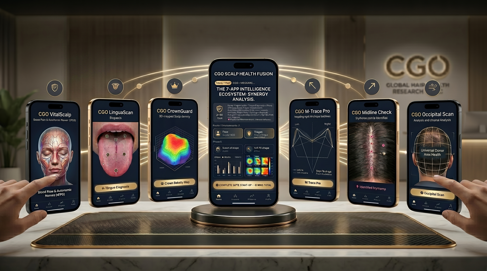

말은 바람에 날리우고
대화는 CGO가 삭제하네…
대화는 CGO가 삭제하네…
C—40
PARTNERSHIP

일반 식단 앱은 칼로리만 봅니다. 음식 궁합 C-11은 rPPG 생체 반응 + 사주 일간 + 오행 + 진료 차트를 모두 종합해 — "오늘 내 몸에 맞는 음식"을 찾아드립니다. 같은 음식이라도 어제와 오늘이 다르고, 사람마다 다 달라요.

사주·생체·천문 데이터로 매 시진 새롭게 처방
꿈 내용을 입력하면 전통 해몽·과학 해몽·C-14 역학 해몽 3가지를 동시에 분석합니다. 오행·일간·ILI점수·NASA 행성 상태·시진을 실시간 반영한 완전 맞춤 해몽입니다.
SVI · 광학 점탄성 × 한방 융합
— WORLD FIRST · SVI TECHNOLOGY —
rPPG × CHROM × 6부위 종합 측정
— 세계 최초 카메라 종합 진단 —
카메라 한 대로 BPM·HRV·혈색·체질까지 — 2분 40초 종합 측정